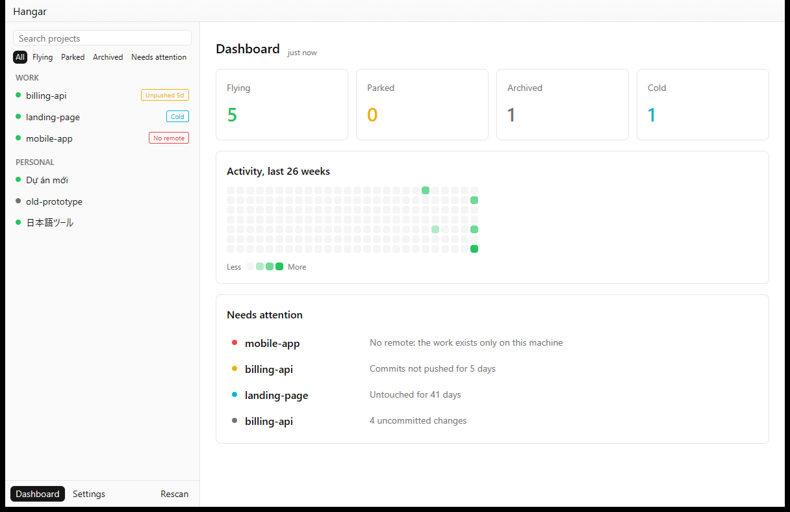

Windows
Windows 10 or 11, 64-bit
Download installer (.exe) MSI packageNot signed yet: if SmartScreen stops it, choose More info, then Run anyway.
Hangar scans your project folders and tells you which ones you are working on, which ones went cold, and which ones hold work that was never committed or pushed. Then it lets you open any of them with the editor, Git, terminals and Claude Code already in place.
Free. Windows, macOS and Linux.
| Project | Status | Branch | Unpushed | Last seen |
|---|---|---|---|---|
| billing-api | FLYING | main | 2 | 5H AGO |
| landing-page | COLD | main | - | 41D AGO |
| mobile-app | UNPUSHED | dev | 7 | 9D AGO |
| old-prototype | NO REMOTE | master | - | 320D AGO |
| scraper | PARKED | main | - | 2D AGO |
Written in Rust with GPUI. Opens in under a second, idles at about 55 MB of memory, and never uploads your code anywhere.

Each project page has the tabs you would otherwise open five apps for. Hangar starts tools only for the project in front of you and stops them when you leave.
Branch, uncommitted and unpushed work, last commit and last Claude session. Ask "What was I doing?" and Claude reads the repo and sums it up.
Errors, completion and go to definition for 12 languages. A missing server is one click away as a language pack, kept out of your global tools. Format on save, Markdown and HTML preview.
Stage single hunks, commit, pull and push, resolve conflicts. Errors tell you the next step. Hangar uses your own git and never force-pushes.
See what runs in each project and on which port. A taken port names the process holding it. Servers left running in cold projects show up so you can stop them.
Definitions, callers and HTTP routes across linked projects. Saving a file that another project uses tells you where, and Claude can read the same graph.
Chat in the project, approve every edit as a diff, or hand a task to an agent that works on its own branch in a separate worktree until you merge it.
Sizes of target/ and node_modules/ in projects you stopped touching, removed on a double click. Outdated and vulnerable libraries across every project.
Import the VS Code or Zed theme you already use, set font sizes, manage Claude Code plugins per project. English, Tiếng Việt, 日本語 and 简体中文.
Latest version: v1.4. All releases and checksums
Windows 10 or 11, 64-bit
Download installer (.exe) MSI packageNot signed yet: if SmartScreen stops it, choose More info, then Run anyway.
macOS 12 or later
Apple silicon (.dmg) Intel Mac (.dmg)Not notarized yet: the first time, right-click Hangar in Applications and choose Open.
x86-64, X11 or Wayland
AppImage Debian / Ubuntu (.deb)Make the AppImage executable (chmod +x) and run it.
The same project scan in your terminal, as hangar. Prebuilt for each system on the releases page.
Install Claude Code and log in. The chat panel also needs Node.js and the ACP adapter:
npm install -g @agentclientprotocol/claude-agent-acp